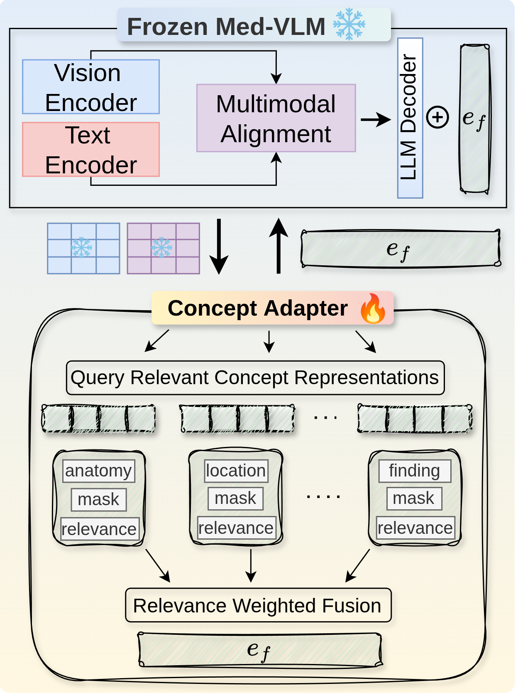

Mitigating Visual Hallucinations in Frozen Medical Vision–Language Models with Query-Relevant Concepts
Concept Adapter learns query-relevant concepts and spatial masks to reduce visual hallucinations while keeping the medical vision-language model frozen.